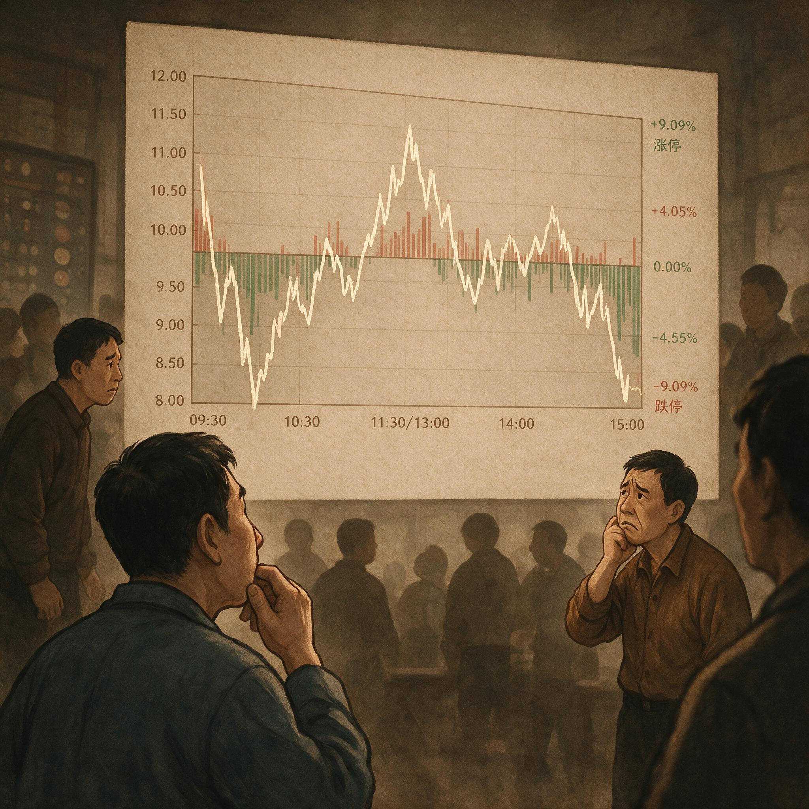

第 2 章
分时图上的体温计
这看似简单的分时图，实则是一场多数人误读的集体幻觉。人们总以为白线向上就是涨，向下就是跌，涨停封住就是强。如果信息真的如此浅白，那么所有观察者理应有相同的判断与行动，盈亏分布也将高度一致。但事实显然不是这样。
以那张加速段的分时图为例。早盘9:30开盘，股价高开七个点，前一日的涨停惯性仍在延续。开盘第一分钟，成交密集区堆积在涨停价下方两档之内，买一档位挂着超过八万手的委托单，卖盘稀薄得几乎可以忽略不计。任何一个盯盘者看到这一幕，都会得出同一个结论：强。
但这个“强”字背后藏着截然不同的两种含义——持筹者看到的是继续锁仓的理由，持币者看到的是抢筹入场的信号。两种解读在同一个盘口上并行不悖，却指向同一个操作方向：买入或持有。合力在此刻表现为一种脆弱的共识，它的脆弱性恰恰在于所有人都以为自己站在正确的一边。
这就像体育比赛中的加时赛，常规时间结束时比分持平，双方进入一个短时段的突然死亡加时——任何一方率先得分便即刻赢得比赛。盘口上的多空博弈，在情绪上升期的分歧阶段，也进入了这样一种“突然死亡”状态：任何一方率先打破平衡，便决定了后续的走势方向。
9:35，第一波抛压出现。涨停价上的封单从八万手骤降至三万手，成交柱状图猛然拉出一根比开盘首分钟更长的红柱。价格仍然封在涨停板上，但买一档位的委托单结构已经发生了变化——原本整齐排列的大额委托单被拆分成了数十笔中小单，每笔不过几百手，分散在买一到买五之间。这是典型的盘口语言：大单拆小单，维持表面上的买盘厚度，实则承接意愿正在衰减。此时分时图上的白线没有任何变化，依旧是一条平直的横线。只看价格的交易者不会察觉任何异常，但读温度的人已经开始感到不安。那根突然放量的成交柱就是体温计上的刻度，它告诉你：有人在涨停板上出货。

10:00，关键节点到来。一笔超过两万手的卖单直接砸穿涨停价，股价瞬间回落至八个点。买一档位的封单被吞噬殆尽，新的委托单还没来得及补上，分时图上那条平直的横线第一次出现了向下的折角。这个折角持续的时间极短——不到二十秒，新的万手封单重新挂出，股价再度回封涨停。但量能已经暴露了一切：那二十秒的空档期内，成交柱状图堆积的绿柱长度超过了此前任何一次红柱。多空双方在涨停价这个关键点位上完成了一次短暂的拉锯，结果是多方勉强守住了阵地，但付出的代价是消耗了大量潜在买盘。
这就是“分歧”在盘口上的真实面貌。它不是价格的下跌，而是价格在关键位置上的反复争夺。涨停价被砸穿又回封，意味着持筹者中有人选择了兑现利润，而持币者中有人愿意在这个位置接筹。双方在同一个价格点上做出了截然相反的决策，这才是分歧的本质。那些只盯着白线看涨跌的人，会把这次开板回封解读为“洗盘”或者“主力试盘”，但这些词汇本身就是一种逃避——逃避对盘口原生信号的直接阅读。你不需要猜测主力的意图，你只需要看到：涨停价上的封单结构从集中变为分散，从大额变为小额，从持续变为断续。这些信号比任何关于主力的臆测都更真实。
再来看那张分歧段的分时图。同一只股票，三天之后，早盘低开三个点。9:30开盘后，股价在分时均线下方徘徊了整整十五分钟，每一次试图上穿均线都被卖盘压回。9:45，第一波拉升启动，白线以近乎垂直的角度冲上涨停价，买一档位瞬间堆出超过十万手的封单。这个画面比三天前的那次回封更加壮观，封单更厚、拉升更快、气势更足。如果只比较两张图的涨停时刻，后者的视觉冲击力远胜前者。
但13:30的开板改变了这一切。涨停价上的十万手封单在三分四十秒内被连续三笔大卖单击穿——第一笔四万手，第二笔三万手，第三笔两万手。分时图上的白线从涨停价直线坠落，击穿分时均线后继续下探至五个点。随后展开的反弹软弱无力，白线在七个点的位置反复震荡了二十分钟，始终无法触及涨停价。买一档位的委托单数量再也没有恢复到此前的规模，最高时也不过两万手，且频繁出现挂单又撤单的痕迹——委托单在档位上停留的时间不超过五秒，刚出现就被撤下，换上新的委托单。这是典型的托单诱多：用虚假的买盘厚度制造承接假象，吸引跟风盘入场，随即撤单让位给真正的卖压。
14:00，第二次回封尝试失败。股价触及涨停价后仅维持了不到一分钟，封单量从未超过五万手，且成交柱状图显示大量筹码在涨停价附近换手。这一次开板之后，白线再也没有回到涨停价上方，尾盘收在六个点。日K线上看，这仍然是一根阳线，甚至是一根涨幅可观的阳线。但分时图上留下的痕迹已经足够清晰：三次测试涨停价，三次都被卖盘击退。每一次回封的封单量都在递减——从十万手到五万手再到不足两万手。每一次开板后的反弹高度都在降低——从七个点到六个点再到尾盘的横盘震荡。这不再是分歧转一致，这是一致转分歧的完整演绎。
两张分时图放在一起对比，形态上的相似性令人不安。同样是涨停板上的开板回封，同样是关键价位上的反复争夺，同样是量能的异常放大。如果仅凭形态记忆来做决策，三天前的那次回封是买点，三天后的这次回封也是买点。但前者的结局是次日的继续涨停，后者的结局是次日的低开低走。区别不在形态本身，而在形态发生的情绪节点。
三天前的那次回封发生在情绪上升期的分歧阶段。当时这只股票刚刚从底部启动第二个涨停板，市场对它的认知仍然存在巨大分歧——有人认为是超跌反弹，有人认为是题材启动。这种分歧反映在盘口上，就是涨停价上的反复争夺。
但关键在于，当时的整体市场情绪处于上升通道，连板股数量在增加，昨日涨停指数的溢价率持续为正。在这种环境下，分歧本身就是买入机会，因为分歧意味着还有潜在的买盘没有入场，还有持币者在观望等待回调。一旦股价在关键价位上展现出承接力度——哪怕这种承接是脆弱的、短暂的、消耗性的——那些观望的持币者就会转化为实际的买盘，推动股价从分歧走向一致。
这就像足球比赛中的加时赛，最早有据可查的规定出现于英格兰足总杯，国际足联于1934年世界杯赛事中正式将加时赛机制纳入淘汰赛阶段。在必须分出胜负的场合，加时赛提供了额外的比赛时间，让双方在常规时间未能解决的悬念得以延续。情绪上升期的分歧阶段，正是这样一个“加时赛”：市场在常规交易时段未能形成一致预期，但通过盘口上的反复争夺，最终会有一方胜出，推动股价走向新的阶段。
三天后的那次回封发生在情绪高潮期向退潮期过渡的节点。此时这只股票已经连续五个涨停板，累计涨幅超过百分之六十。市场对它的认知已经高度一致——所有人都知道它在炒什么题材，所有人都认可它的龙头地位。
这种一致性本身就是最大的风险。当所有人都已经买入或者准备买入时，潜在的买盘已经被消耗殆尽。盘口上那十万手的封单看似壮观，实则已经是最后的买盘集中释放。一旦这些买盘被卖盘消化完毕，剩下的就只有持筹者的兑现压力。
此时的开板回封不再是分歧转一致的信号，而是一致转分歧的信号——那些在涨停板上出货的人，正是前期在分歧阶段买入的持筹者。他们读懂了分时图上的体温变化，知道市场的情绪已经过热，于是选择在最高潮的时刻悄然离场。
这就像篮球比赛中的加时赛，若常规时间结束时双方比分持平，则进行五分钟的加时赛，若五分钟结束后仍未决出胜负，则继续再加五分钟，直至某一方获胜。NBA历史上曾出现过多达六个加时赛才分出胜负的情况。情绪高潮期的盘口博弈，也进入了这样一种“无限加时”的消耗战：每一次回封尝试都消耗着最后的买盘，每一次开板都暴露着持筹者的兑现压力，直到最终一方彻底胜出——而这次胜出的，往往是卖方。
这就是龙头战法盈亏分水岭的真正所在。它不是识别涨停板的能力——任何一个经过三个月训练的散户都能准确识别出涨停板。它是对情绪节点的体感判断：当前的分时走势处于分歧转一致的起点，还是一致转分歧的终点？这个问题没有标准答案，没有任何技术指标能够给出明确的买卖信号。它要求交易者同时阅读两套信息：一套是分时图上的盘口原生信号——量峰位置、封单结构、委托单变化、关键价位争夺痕迹；另一套是市场整体情绪的温度——连板股数量、昨日涨停指数溢价率、炸板率、市场成交量能。两套信息交叉验证，才能得出一个概率性的判断。
以10:00那次拉升为例。如果只看个股分时图，那根垂直拉升的阳线、涨停价上瞬间堆出的万手封单、开板后迅速回封的速度——所有这些信号都在说“强”。
但如果同时观察市场整体情绪温度，你会发现当时昨日涨停指数的溢价率已经连续三天超过百分之五，连板股数量达到近期峰值，炸板率开始从低位回升。这些信号告诉你：市场情绪已经进入高潮期，一致性预期正在形成，潜在买盘正在枯竭。两套信息放在一起，结论就不再是“强”，而是“强弩之末”。
这就像美式橄榄球中的加时赛，NFL加时赛采用突然死亡法，但双方均保证至少一次控球。加时赛开始前掷硬币决定先攻或先防，先攻方若未得分或双方各一次控球后仍平，则此后先得分者胜；防守方直接得分（安全分、掉球/抄截回攻达阵）则立即获胜。盘口上的多空博弈，在情绪高潮期也进入了这样一种“保证控球”的消耗战：多方看似拥有先攻优势（封单厚、拉升快），但卖方只要一次集中抛售（防守得分），就能立即逆转局势。
13:30的开板回封则更加微妙。那十万手封单被击穿的方式本身就蕴含着丰富的信息。
如果是真正的分歧转一致，卖盘应该被买盘逐步消化，封单量的减少应该是一个渐进的过程——从十万手到八万手再到五万手，期间伴随着价格的小幅波动和委托单的持续补充。但实际发生的情况是：三笔大卖单在不到四分钟的时间内集中砸出，封单量断崖式下跌，期间几乎没有新的买盘补充。
这种出货方式说明卖方是有备而来的——他们知道封单的厚度只是表象，真正的承接意愿远没有看起来那么强。所以他们选择用集中抛售的方式一次性击穿封单防线，不给多方任何喘息的机会。
这就像棒球比赛中的延长局，棒球运动不设计时器，理论上没有时限，其加时赛表现为“延长局”，即从第十局起不断追加局数，直到某一局下完毕出现领先者为止。职业棒球史上最长的比赛发生在1981年的一场小联盟赛事中，由波塔基特红袜队对阵罗切斯特红翼队，共进行了33局，耗时超过8小时才完赛。红翼队在第21局上半局得分，但波塔基特队在下半局追平，使比赛得以延续。盘口上的多空博弈，在情绪退潮期也进入了这样一种“无限延长”的消耗战：每一次回封尝试都像一次追平，但卖方总能在下一局（下一次开板）重新取得领先，直到最终彻底击溃多方的防线。
那些在13:30之后试图抄底的交易者，看到的是股价从五个点反弹到七个点、买一档位重新挂出两万手委托单、分时均线似乎正在形成支撑。他们把这些信号解读为“分歧转一致”的机会，于是买入。但他们忽略了一个关键细节：那两万手委托单在档位上停留的时间不超过五秒。挂单、撤单、再挂单、再撤单——这种频繁的撤挂行为本身就是一种盘口语言。真正的买盘不需要通过频繁撤挂来维持存在感，它会持续挂在档位上等待成交。只有那些不想真正成交、却又想制造买盘假象的资金，才会反复撤挂。这不是承接，这是诱多。
尾盘的横盘震荡则提供了最后一个确认信号。如果市场对这个价格真的有承接意愿，尾盘应该出现抢筹行为——持币者担心次日踏空，会在收盘前集中买入。但实际发生的情况是：股价在六个点的位置横盘了整整四十分钟，成交逐渐萎缩，买盘和卖盘都失去了兴趣。这种尾盘走势说明多空双方都已经精疲力竭——持筹者不想在这个价格继续卖出，持币者也不想在这个价格继续买入。双方都在等待次日的开盘给出新的方向。而这种等待本身，就是一种方向：当一只连续涨停的股票在高位出现尾盘横盘缩量时，意味着短期买盘已经枯竭，次日低开的概率远高于继续涨停的概率。
所有这些盘口原生信号——量峰的堆积位置、封单的结构变化、委托单的撤挂频率、关键价位的测试次数与反弹高度、尾盘的成交量能与价格波动幅度——共同构成了一套完整的体温测量系统。价格只是体温计上的读数，而这些信号才是体温计背后的水银柱。读数可以被人为操控——涨停价上的封单可以虚假堆积，分时图上的白线可以用大单对倒维持——但水银柱的升降无法伪装。量能的变化、委托单的结构、关键价位的争夺痕迹，这些才是市场情绪的真实刻度。
所谓“合力”,在这个意义上被彻底祛魅。它不是某种神秘力量的统一行动，不是主力资金的精心策划，不是市场参与者的心有灵犀。它只是持筹者与持币者在每一个价格区间上的预期碰撞的总和。当大多数持筹者认为当前价格已经充分反映了预期、选择卖出时，卖压就形成了；当大多数持币者认为当前价格还有上涨空间、选择买入时，买盘就形成了。这两股力量在分时图上不断碰撞，每一次碰撞都会留下痕迹——成交柱的高度、委托单的变化、价格的波动幅度。这些痕迹叠加在一起，就是“合力”在盘口上的真实面貌。
而这种合力是动态的、随时可能逆转的。一只股票在早盘10:00可能还处于分歧转一致的上升通道中，到了下午13:30就可能逆转为一一致转分歧的下降通道。逆转的关键不在于价格本身，而在于价格变化背后的预期结构。当一只股票的持有者从“等待更高价格卖出”转变为“担心更低价格而卖出”时，合力的方向就逆转了。这种转变在分时图上会留下清晰的痕迹：反弹高度递减、封单量递减、委托单撤挂频率增加、关键价位测试次数增加但始终无法有效突破。这些痕迹就是体温计上的读数变化，它告诉你：市场的情绪正在从热转冷。
但即便学会了读取这些体温变化，交易者仍然面临一个更根本的问题：如何确保自己的体感与市场节奏匹配？你能读懂分时图上的情绪温度，不代表你能在正确的时机做出正确的决策。知道市场正在从分歧转一致是一回事，在那一刻按下买入键是另一回事；知道市场正在从一致转分歧是一回事，在那一刻按下卖出键是另一回事。知与行之间的鸿沟，比大多数人想象的要宽得多。
这个鸿沟的根源在于：分时图上的情绪温度是实时变化的，而交易者的体感往往滞后于这种变化。当你在10:00看到那根垂直拉升的阳线时，你的体感告诉你“强”,但市场的情绪温度可能已经在那一刻达到了峰值，接下来只有冷却一条路可走。你的体感捕捉到的是过去时态的信号，而市场的情绪温度指向的是未来时态的概率。这种时间差导致了无数交易者在最高点买入、在最低点卖出——不是因为他们读不懂分时图，而是因为他们的体感总是比市场节奏慢半拍。
这种“慢半拍”在退潮期会被放大到致命的程度。在情绪上升期，即便你的体感滞后于市场节奏，你仍然有机会盈利——因为整体趋势向上，股价会在回调后再次上涨，给你解套甚至盈利的机会。但在退潮期，体感的滞后意味着你会在一致转分歧的起点买入，然后在分歧转一致的幻象中加仓，最后在深度套牢中被迫割肉。退潮期的任何纪律执行——止损、仓位控制、分批建仓——都无法扭转一个根本性的错误：你在错误的情绪节点做出了错误的判断。
这就是为什么龙头战法的核心技能不是图形识别，而是对情绪节点的体感判断。图形识别可以在事后完成——任何一个人都能在一只股票涨停之后指出它在分时图上出现了“回封形态”。但体感判断必须在事中完成——你必须在10:00那一刻，在看到那根垂直拉升阳线的同时，判断出这是分歧转一致的起点还是一致转分歧的终点。这个判断没有标准答案，没有任何公式可以套用，它依赖的是交易者对盘口原生信号的熟悉程度、对市场整体情绪温度的感知能力、以及最重要的——对自己体感滞后的认知和修正能力。
回到开篇那两张分时图。现在再看它们，你会发现那些隐藏在价格背后的博弈痕迹变得清晰可见。加速段的那张图里，早盘的垂直拉升背后是持筹者的锁仓信心与持币者的抢筹焦虑在碰撞;10:00的开板回封背后是早期获利盘的兑现压力与后来者的追涨意愿在拉锯；尾盘的封单稳定背后是多方暂时占据上风、但潜在买盘正在被消耗的隐忧。分歧段的那张图里，早盘低开后的拉升背后是持币者对龙头股惯性的信仰;13:30的断崖式开板背后是持筹者集体性的恐慌兑现；尾盘的横盘缩量背后是多空双方都已精疲力竭、等待次日宣判的僵局。
两张图里都有贪婪，也都有恐惧，但贪婪和恐惧的对象截然不同。加速段的分时图里，贪婪的对象是继续涨停的预期，恐惧的对象是踏空的焦虑；分歧段的分时图里，贪婪的对象是抄底反弹的预期，恐惧的对象是高位套牢的记忆。同样的涨停板，同样的开板回封，承载的是完全不同的情绪结构。只看价格的人看到的是相同的形态，读温度的人看到的是截然相反的信号。
这种对分时体温的阅读能力，构成了短线交易者在信息不对称市场中的最后一道防线。龙虎榜数据滞后、基本面信息不透明、题材真伪难辨——所有这些信息层面的劣势，都可以通过对盘口原生信号的直接阅读来弥补。因为无论主力资金如何隐藏意图，无论上市公司如何包装信息，最终所有的博弈都会在分时图上留下痕迹。成交量不会说谎，委托单结构不会说谎，关键价位的争夺痕迹不会说谎。这些原生信号是市场唯一无法被操控的信息源——因为操控它们需要付出真金白银的成本，而成本本身就会暴露操控者的意图。
但这也意味着，掌握了分时体温阅读能力的交易者，将进入一个更加孤独的处境。当大多数人还在为涨停板欢呼时，你已经看到了封单背后的脆弱；当大多数人还在为开板恐慌时，你已经看到了承接背后的韧性。你的判断与大众情绪背道而驰，你的操作与市场共识逆向而行。这种孤独不是选择的结果，而是能力的代价——你读懂了别人没读懂的信息，你就必须承受别人无法理解的焦虑。
这种焦虑在退潮期会达到顶峰。当市场情绪从高潮转向退潮时，大多数交易者还在沉浸在连续盈利的亢奋中，还在用上升期的经验指导自己的操作——看到开板回封就认为是分歧转一致的机会，看到尾盘拉升就认为是次日继续涨停的信号。而你已经在分时图上读到了不一样的答案：封单量递减、反弹高度递减、委托单撤挂频繁、尾盘横盘缩量。你知道退潮期已经来临，但你也知道自己的判断可能出错——万一这次真的不一样呢？万一那些递减的信号只是暂时的调整呢？万一市场情绪还能再来一波高潮呢？
这种自我怀疑是所有体感判断者必须面对的终极考验。你无法向任何人求证你的判断是否正确——因为能够验证你的判断的人，同样也在孤独地做出自己的判断。你只能在第二天开盘时，看到股价低开低走的那一刻，才知道自己昨天的判断是对的。但那一刻已经太晚了——正确的判断如果没有转化为正确的操作，就只是一场智力上的自慰。
这就是本章最终要抵达的那个压力点：即便学会了读取分时体温，交易者又如何确保自己的体感与市场节奏匹配？这个问题没有标准答案，但它指向了一个更深层的问题——当少数人凭借这种体感在特定市场阶段获得暴利后，他们的经验会被如何对待？那些在连板股集中期精准捕捉到分歧转一致节点的交易者，他们的操作记录会被后来者反复研究、总结、提炼，最终固化为一套可供复制的战法体系。这套体系会被赋予各种名字——“龙头战法”“打板战法”“接力战法”——但无论叫什么名字，它的核心都是对分时图上情绪节点的体感判断。
问题在于，体感是无法复制的。你可以复制一个人的操作手法——在什么位置买入、在什么位置卖出、仓位如何分配——但你无法复制他在那一刻对市场情绪温度的感知能力。这种能力是在无数次盯盘、无数次亏损、无数次自我怀疑中磨炼出来的，它不是一套可以传授的知识，而是一种必须亲身经历的体验。当这种体验被总结成文字、固化为教条、传播给大众时，它就已经失去了原有的生命力——变成了一具没有体温的尸体。
而那些传授这套战法的人，很少会告诉你这个真相。他们会告诉你“回封就是买点”“放量就是信号”“封单厚就是强”,但他们不会告诉你：回封只有在分歧转一致的节点才是买点，放量只有在承接意愿强的时候才是信号，封单厚只有在没有被频繁撤挂的时候才是真正的强。他们把这些判断标准简化成了形态记忆，因为形态记忆可以被传授、可以被复制、可以被用来证明战法的有效性。但体感判断无法被传授——它只能在真实的盯盘过程中，通过一次次地读取分时体温、一次次地验证或推翻自己的判断、一次次地在知与行的鸿沟中挣扎，才能逐渐形成。
这就是短线交易世界最残酷的真相：真正能够盈利的能力是无法传授的，而那些可以被传授的知识往往无法盈利。这个真相将在下一章被进一步揭示——当那些凭借体感获得暴利的交易者被封神、他们的经验被固化为“龙头信仰”之后，整个短线社群将陷入一场集体性的认知幻觉：相信只要学会了某种战法、掌握了某种形态、遵循了某种纪律，就能复制那些幸存者的成功。
就像它一直以来所做的那样。